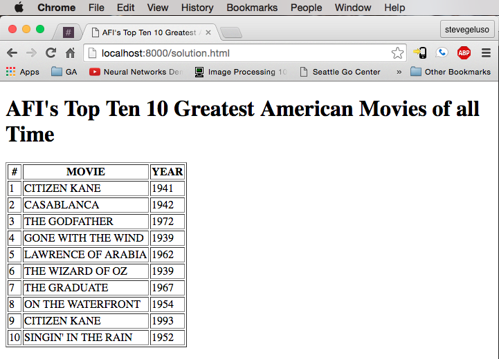

This exercise involves converting a given skeleton text file into an HTML table. The text file contains a list of the top 10 movies of all time, according to the top of this list of AFI's 100 GREATEST AMERICAN MOVIES OF ALL TIME .
This exercise allows us to practice creating HTML tables. The final webpage must meet the following requirements:
If you finish this exercise early consider doing some optional bonus work. Practice creating hyperlink references in anchor tags by creating links from each movie to the movies IMDB page or Wikipeia page, or both.
Use your own disgression to decide where to place the links. If you only add links to one of the pages consider wrapping the movie name in an anchor tag. If you add links to both IMDB and Wikipedia pages consider adding two more columns to the table.
Download the skeleton file to get started: skeleton.html
The final page should look like this:
